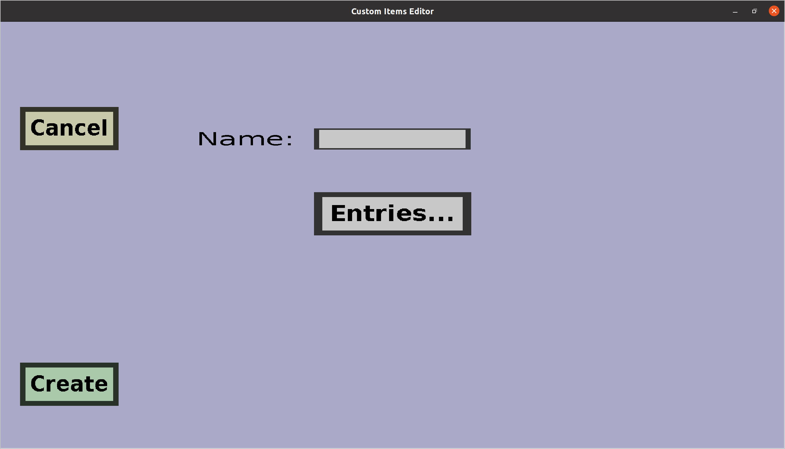

The fuel registry edit menu can be used to modify custom fuel registries or create new ones.
If you just started creating a new fuel registry, it should look like this:

-
The 'Cancel' button will take you back to the
fuel registry overview, without keeping changed made to this
fuel registry or creating a new one.
-
If you are creating a new fuel registry, there will be a 'Create' button. Clicking it will
add the fuel registry you're designing, and take you back to the
fuel registry overview if it went well.
-
If you are editing an existing fuel registry, there will be an 'Apply' button. Clicking it
will take you back to the fuel registry overview and keep the
changes you made to it.
-
You need to type the name of the fuel registry in the text edit field on the right of
'Name:'. Currently, the name is not used in the plug-in; it's only purpose is to
distinguis different fuel registries from each other.
-
The most important part of a fuel registry is the list of entries. These actually determine
which items are considered fuel. To change this list, click on the 'Entries...' button,
which will take you to the fuel entries menu for this
fuel registry.